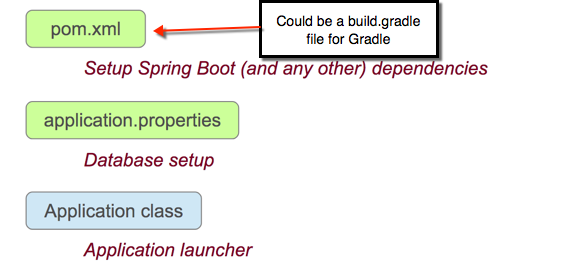
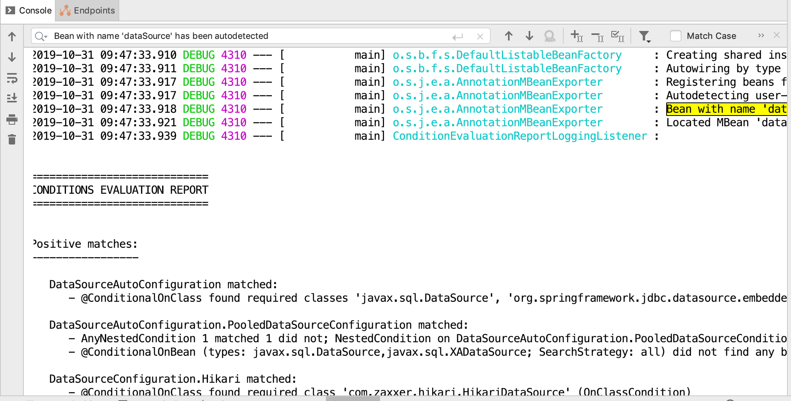

Purpose
In this lab you will gain experience with creating a Spring Boot project from the beginning, taking advantage of the Spring starters to easily configure your project.
Learning Outcomes
What you will learn:
-
How to initialize a project
-
How to select the right starters for your project
Specific subjects you will gain experience with:
-
Using
start.spring.ioto create a Boot-enabled project -
Adding starter dependencies to your Maven or Gradle project
-
Determining what configuration is enabled
There is no project for this lab - you will use the Initializr to create it.
Estimated time to complete: 30 minutes.
(A solution is provided for reference: 30-jdbc-boot-solution).
Getting Started
If you attended the Spring Essentials segment of the Core Spring course you should already be familiar with the Rewards Application.
Otherwise, if this is the first day of your Spring Boot course, read about the Rewards Application now before continuing. We use this application as the basis for the remaining labs.
Use Case
Imagine you wanted to create a very simple application to access and display information about the accounts in your Reward database.
In a traditional Spring project, you enjoy the developer productivity provided by the framework to simplify application development. However, configuring a project with the right dependencies to ensure you have all the right Spring libraries can be challenging and time-consuming.
Consider the necessary setup just to configure a JDBC project.
- You need to obtain the right JDBC drivers for the database you are using
- You need to obtain the core Spring and Spring JDBC libraries
- You need to configure your JDBC connections and potentially initialize
- You may wish to add JDBC connection pooling for efficiency
- You may need to set up database initialization with schema definitions and data population
As you will discover, the most basic Spring Boot application really only requires the following three files to get started.

You will use the Spring Initializr to create a basic JDBC Spring Boot Project using an HSQLDB (Hyper SQL) database. You will make a few minor modifications to add SQL scripts to create tables and populate the database with data for the Reward Network application. The initial application will use a very simple JDBC call to query the T_ACCOUNT table and display the total number of accounts. Using Spring Boot, you will do this with a minimal amount of setup and configuration.
Instructions
Create and run a Spring Boot project
Create a Spring Boot project called jdbc-boot that will serve as a very basic application to expose account details.
Depending on your IDE, a new project wizard may be available that uses the Spring Initializr for you without leaving the IDE:
- Spring Tool Suite: File -> New -> Spring Starter Project (if not there use File -> New -> Other -> Spring Boot -> Spring Starter Project)
- IntelliJ IDEA Ultimate Edition: File -> New -> Project -> Spring Initializr
Alternatively, use the website directly, download the generated zip and import into your IDE.
-
Use either your IDE or the Spring Initializr Site to create a new Spring Boot project with the following project values
Field Value Group io.pivotal.education.boot Artifact jdbc-boot Type Maven Project or Gradle Project Language Java Packaging JAR Java Version 8 or 11 based on your workstation setup Version Default (0.0.1.SNAPSHOT) Name jdbc-boot Description First Boot Project Package rewards Refer to the appendix for details on how to create a project or module using Spring Boot Initializr.
Select the following dependencies to add to the project.
-
JDBC API (under the SQL category) - Adds general JDBC support, including the Spring JDBC libraries
-
HyperSQL Database (also under the SQL category) - Adds specific HSQL libraries and drivers needed for the HSQL database
If using a wizard in the IDE, be sure to specify the final project folder name as jdbc-boot
-
-
If you did not use the wizard to create the project, you will need to import the project
-
Take a moment to explore the project that was just created.
-
Open the
pom.xmlorbuild.gradlefile and note the dependencies and the parent reference. What 3 dependencies are defined? -
Now, open the
JdbcBootApplication(assuming you've named your application asjdbc-bootin the previous step). What are the key elements of this file that might make it behave as a Spring Boot application?
-
-
Set the logging level to DEBUG by adding the following line to the
src/main/resources/application.propertiesfilelogging.level.root=DEBUG -
Run the
JdbcBootApplication.The application should run successfully. Now what can you determine from the output?
You should see a message about a
dataSourcebean being auto-detected. (You will have to use IDE-provided search for Bean with name 'dataSource' has been autodetected string in the console because it will be displayed way before very verboseCONDITIONS EVALUATION REPORT.)
-
How was your application able to create a JDBC Datasource?
-
Ordinarily, a JDBC DataSource is initialized using a JDBC driver class, the URL to the database server and more. Since these were not provided explicitly by you, where did those values come from?
At this point, your application does not do too much since you are merely running the default application created from the Spring Boot Initializr.
-
Use SQL scripts
-
Copy the
schema.sqlanddata.sqlfiles from the26-jdbc-solutionproject. You will find them insrc/test/resources/rewards/testdb. Copy the files to thesrc/main/resourcesfolder of your new project. Make sure the two files reside directly under theresourcesfolder. -
Re-run the
JdbcBootApplicationand notice the console output now shows a bit more taking place.-
Note that a
HikariPoolJDBC connection pool was created and configured for the DataSource. -
Notice also that the two scripts you copied to the
resourcesfolder now automatically get executed, resulting in the database being initialized with the tables defined in theschema.sqlfile and loaded with the data in thedata.sqlfile. (Search forExecuted SQL scriptstring in the console.)It turns out that there was something special about the location where you copied the SQL scripts (
src/main/resources) because in a Maven or Gradle project, this directory is always on the classpath. The SQL files were detected and invoked because Spring Boot automatically looks for and runs two filesschema.sqlanddata.sqlif it finds them on the classpath.Alternatively, you could have placed those files anywhere in your project and named them anything you wanted. In that case, you would need to add the following entries to your
application.propertiesfile to tell your Spring Boot application where to find these files.spring.datasource.schema=<path to your schema SQL file> spring.datasource.data=<path to your data SQL file>
-
Use CommandLineRunner Bean
The run method of CommandLineRunner bean gets executed
when a Spring Boot application gets started.
In this step, you are going to use JdbcTemplate bean to
retrieve number of accounts.
-
Open the
JdbcBootApplicationclass. Add the following code in place of the default template code.package rewards; import org.springframework.boot.CommandLineRunner; import org.springframework.boot.SpringApplication; import org.springframework.boot.autoconfigure.SpringBootApplication; import org.springframework.context.annotation.Bean; import org.springframework.jdbc.core.JdbcTemplate; @SpringBootApplication public class JdbcBootApplication { public static void main(String[] args) { SpringApplication.run(JdbcBootApplication.class, args); } @Bean CommandLineRunner commandLineRunner(JdbcTemplate jdbcTemplate){ String QUERY = "SELECT count(*) FROM T_ACCOUNT"; // Use Lambda expression to display the result return args -> System.out.println("Hello, there are " + jdbcTemplate.queryForObject(QUERY, Long.class) + " accounts"); } } -
Re-run the
JdbcBootApplication.Note that amidst the typical Spring Boot application output to the console, there is a line that says: (you might need to perform text search in the console)
Hello, there are 21 accounts
Here are some questions to consider
-
Where did the
JdbcTemplatebean come from? -
You typically initialize or create the
JdbcTemplatewith an instance ofDataSource. How did this get created and configured and dependency injected into theJdbcTemplate?
Set Logging level
-
Set logging level of a package (
rootin this example) in theapplication.propertiesfilelogging.level.root=ERROR
Customize banner
-
Create custom banner by creating
banner.txtundersrc/main/resourcesfolder. You can generate a banner text from here and copy the generated text into thebanner.txtfile. -
Re-run the application. You should now see the following output if everything is configured properly.
_________ .__ __________ __ / _____/____________|__| ____ ____ \______ \ ____ _____/ |_ \_____ \\____ \_ __ \ |/ \ / ___\ | | _// _ \ / _ \ __\ / \ |_> > | \/ | | \/ /_/ > | | ( <_> | <_> ) | /_______ / __/|__| |__|___| /\___ / |______ /\____/ \____/|__| \/|__| \//_____/ \/ Hello, there are 21 accounts Process finished with exit code 0
Write integration testing code
-
Write testing code using
@SpringBootTestannotation.package rewards; import org.junit.jupiter.api.Test; import org.springframework.beans.factory.annotation.Autowired; import org.springframework.boot.test.context.SpringBootTest; import org.springframework.jdbc.core.JdbcTemplate; import static org.assertj.core.api.Assertions.*; @SpringBootTest public class JdbcBootApplicationTests { public static final String QUERY = "SELECT count(*) FROM T_ACCOUNT"; @Autowired private JdbcTemplate jdbcTemplate; @Test public void testNumberOfAccount() throws Exception { long count = jdbcTemplate.queryForObject(QUERY, Long.class); assertThat(count).isEqualTo(21L); } } -
Run the test and verify it succeeds.
Summary
In this lab, you have possibly gotten your first taste of the workings of Spring Boot.
-
You have seen the basic steps to quickly bootstrapping a Spring Boot project with a technology such as JDBC, using one of the various methods of accessing the Spring Initializer.
-
You have seen how, simply by having certain dependencies and their associated classes on the classpath, certain beans will be created.
-
You have seen how simple it is to create a basic JDBC application with a minimal amount of configuration and writing code.
-
You have seen how basic configuration of your Spring Boot application can be performed through the
application.propertiesfile.
Many of the features you have seen here will be explored further in later modules of the course.
Congratulations, you are done with the lab!